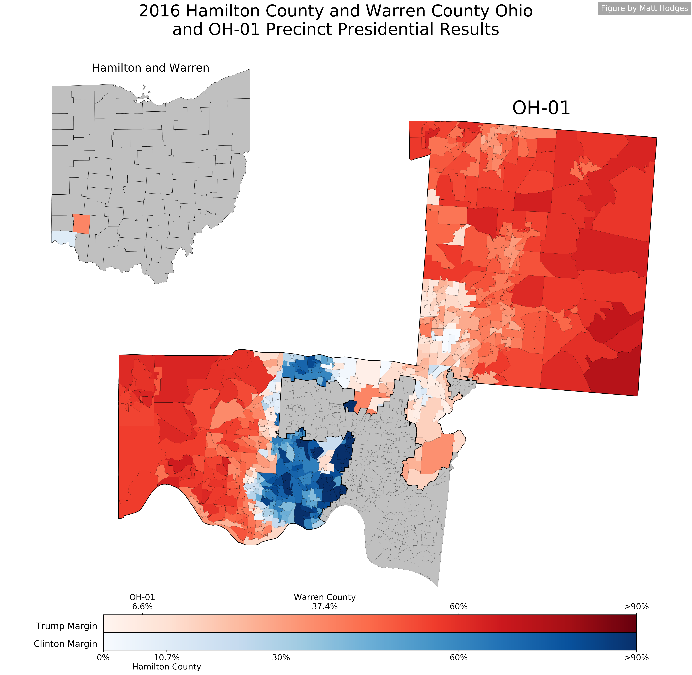
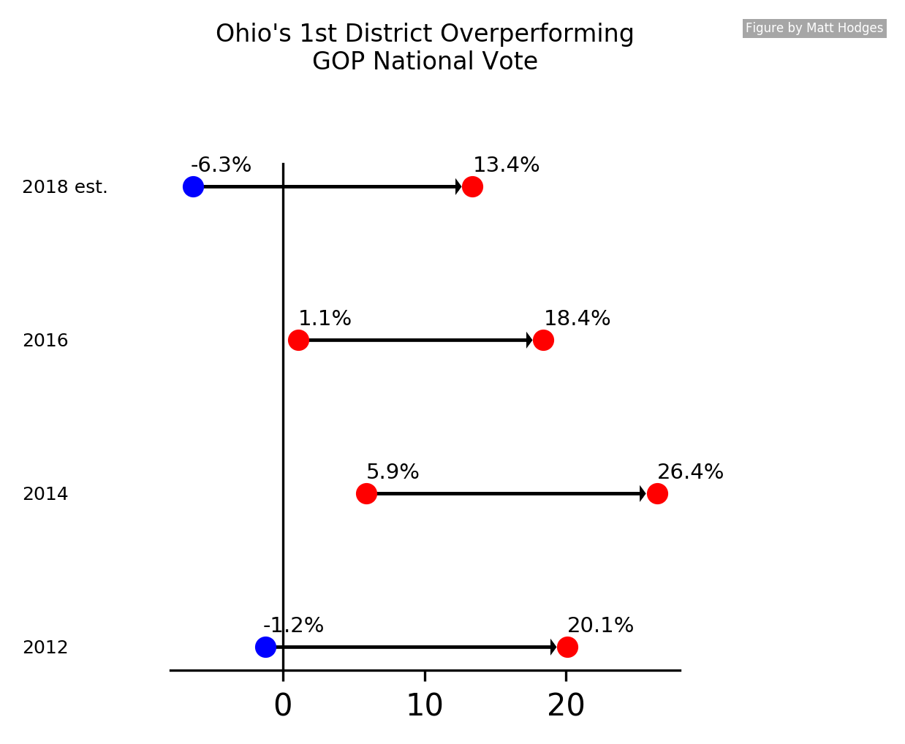

2018 Profile: Ohio's 1st District
A Cracked Cincinnati May Dash Democrats' 2018 Hopes
By: Matt Hodges, Updated 2018-08-15Overview
Ohio's 1st Congressional district is located in the Southwest corner of the state. It is comprised of much of Hamilton County (Cincinnati) and Warren County. With the exception of 2009–2011, on the tails of the 2008 Obama Democratic wave, Republican Steve Chabot has enjoyed a 24-year hold on the district. The district is often criticized as being the product of the "cracking" gerrymandering technique, as much of the more liberal areas of Cincinnati are split between Ohio's 1st and 2nd districts. This structure gives Republicans the comfort of encompassing the entirety of deep-red Warren County while minimizing the weight of the increasingly Democratic Hamilton County.
The primary election is on Tuesday, May 8th. Republican Steve Chabot can be safely considered the presumptive nominee for his party. Democrat Aftab Pureval is seeking the Democratic nomination unopposed.
The district is currently rated Toss-Up by Sabato's Crystal Ball and Lean Republican by The Cook Political Report.
The Republican Geographic Advantage
Since redistricting before the 2012 election, Ohio's 1st district has comprised the entirety of solidly-Republican Warren County and roughly 65% of light-blue Hamilton County. This structure lends an intrinsic advantage to Republican candidates as it minimizes the Democratic weight of Cincinnati. Examining the 2016 presidential results in the district paints this picture well.
Hillary Clinton won Hamilton County by 10.7%, in large part thanks to deep-blue neighborhoods in Cincinnati. But she lost Warren County by 37.4%. There were 215,719 votes for Clinton in Hamilton County, but only 127,258 of those votes were cast in Ohio's 1st district. About 33% of Cincinnati voters are in Ohio's 2nd district. By splitting out much of Cincinnati's east side, Ohio's 1st becomes light red, going for Trump by 6.6%. Coupling this Democratic disadvantage with Chabot's incumbent hold on the district allowed him to carry it in 2016 by a comfortable 18.4% margin.
Since the district's geographic formation in 2012, Chabot has carried it by 21.6%, on average. Chabot overperforms Republicans in the House national popular vote by 19.7%, on average. FiveThirtyEight currently puts Democrats ahead in the national generic ballot by 6.3 points. By this metric alone, one could project Republicans to carry Ohio's 1st district in 2018 by 13.4 points.
Presidential Democrats have shown a slightly more favorable performance in the district. In 2012, Romney carried it by 6.1% while Obama carried the country by 3.9%. In 2016, Trump carried the district by 6.6%, while Clinton carried the country by 2.2%. Over these two cycles, Republican Presidential candidates overperform in Ohio's 1st district by 9.4%, on average.
Democrats have been performing amazingly well in special elections since 2016, running roughly 12 points ahead of their 2016 Presidential margins. Projecting that average onto Trump's 6.6% hold on Ohio's 1st district might lead one to believe Democrats are favored in 2018. But it's important to remember that all of the special elections have been unaffected by any incumbent's advantage. It would be naive to ignore Chabot's historical success. Nonetheless, there are interpretations that can be made. Daniel Donner's Special Elections Index projects that Democrats could carry the national House popular vote by 9.6 points this cycle. But even with such a generous showing, Steve Chabot's average suggests he could still win by about 10 points.
It may just be the case that too much of blue Cincinnati is cut out of Ohio's 1st district for Democrats to ride the wave this November.
The Candidates
The Republican Incumbent
Steve Chabot, the Republican incumbent, has been the Congressman from Ohio's 1st district since 1994, with the exception of a narrow loss to Democrat Steve Driehaus in the Obama wave of 2008. In 2010, Chabot ran again and reclaimed the seat, which he has held since.
Chabot can be considered a pure Republican. He has voted with the Republican Party of the 115th Congress 98% of the time and in line with President Trump 95% of the time. In 2003 he authored a bill prohibiting late-term abortion, which was signed into law by President George W. Bush. He has consistently opposed the Affordable Care Act and the Dodd-Frank Act. Chabot also advocates for teaching "intelligent design" as an alternative to the theory of evolution in Ohio public schools.
Thus far in the 2018 cycle, Chabot has raised $760,184 towards his reelection, with the majority coming from PACs. In the first quarter of 2018, Chabot raised $171,335. He is one of four Congressional Republicans from Ohio who trailed their Democratic challengers in first-quarter fundraising.
The Democratic Challenger
Aftab Pureval made his political debut in 2016 when he became the first Democrat in more than 100 years to be elected as the Hamilton County Clerk of Courts. He was a latecomer to the 2018 Democratic primary for Ohio's 1st district, but upon announcing his campaign, perennial candidate Michele Young decalared she would not enter the race, and newcomers Robert Barr and Laura Ann Weaver announced that they would step aside in support of Pureval.
The DCCC has highlighted Pureval as a "top-tier candidate" and has enrolled Ohio's 1st district in their Red To Blue target program. Both the DCCC and Pureval highlight his cost-cutting measures in the Clerk of Courts office, as well as being the first county officeholder to offer paid family leave.
One potential pain point for Pureval is a question of his residency. He reportedly owns a house in the Hyde Park neighborhood of Cincinnati, which is part of Ohio's 2nd district. However, he claims he recently moved downtown within the bounds of Ohio's 1st district.
Thus far in the 2018 cycle, Pureval has raised $1,571,517, with $664,347 of that coming from the first quarter of 2018, giving him a sizable fundraising advantage against Chabot.
Outlook
Whichever way you slice it, Aftab Pureval is the unquestionable underdog in the race for Ohio's 1st district. The geographic makeup puts any Democrat at a disadvantage by removing the increasingly liberal Cincinnati voters and replacing them with blood-red Warren County voters. This will give Steve Chabot a comfortable edge heading into November. Nonetheless, Pureval had gotten off to an impressive fundraising start. The enthusiasm gap between Republicans and Democrats this cycle, coupled with Democrats being the White House out-party, is only to Pureval's benefit.
An upset is certainly possible in Ohio's 1st district, but this is Chabot's race to lose. Pureval needs to perform above and beyond the rest of the Democratic Party if he hopes to have a chance. Specifically, he needs to perform about 7 points better than Hillary Clinton did in a district that boasts a strong Republican incumbent. The silver lining? If there's any year for a wave of unlikely Democratic victories, it's this year.
Acknowledgements
Thanks to Daily Kos Elections and OpenElections for historic election data. Thanks to Sabato's Crystal Ball and The Cook Political Report for House ratings. Thanks to ProPublica for campaign finance data.
Disclosure
As of 2018-08-15, the author has donated $210 to Aftab For Ohio.

Matt Hodges is a software engineer who studies campaign finance and election data. He previously built campaign technology for Hillary Clinton. You can find him on Twitter.